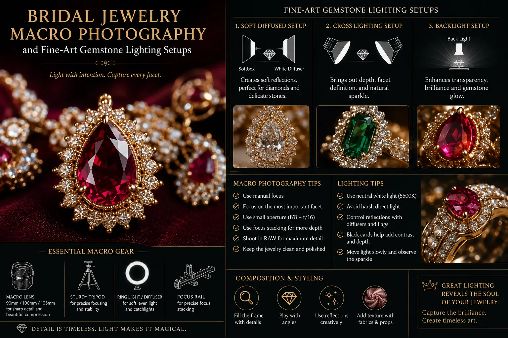
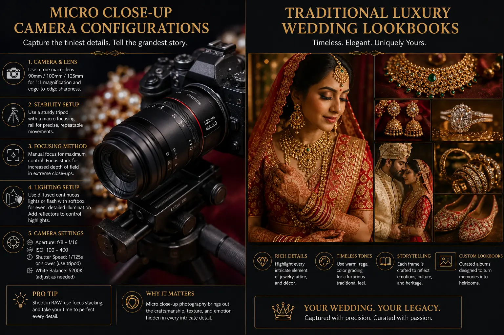

Macro Lens Techniques to Capture the Intricate Gemstone Geometry of Bridal Jewelry
Why Bridal Jewelry Deserves Its Own Photographic Discipline
In South Indian weddings, bridal jewelry is not an accessory — it is an heirloom, a cultural statement, and often the single most valuable physical object present at the celebration. A traditional bridal set — comprising gold necklaces layered in graduated lengths, temple jewelry earrings with intricate deity carvings, stone-set bangles, a maang tikka with dangling chains, a nose ring with connecting chain to the ear, and gemstone-encrusted rings — represents generations of family investment, artisanal craftsmanship, and cultural heritage.
Yet in the vast majority of wedding photography, this extraordinary jewelry is captured as a background element — visible in portraits but never documented with the detail, precision, and artistic care that its craftsmanship deserves. The individual gemstone facets that create fire and brilliance, the micro-engraved patterns on gold surfaces, the precise stone settings and prong work, the graduated colour variations in natural gemstones — all of these details are invisible in standard Marriage photography because they require a completely different photographic discipline: Bridal Jewelry Macro Photography.
Macro jewelry photography at weddings is a specialised practice that demands dedicated equipment — true macro lenses, focus stacking rails, precision lighting — and specific technical knowledge about how gemstones interact with light. It is the intersection of product photography and wedding photography, producing images that serve both as artistic documentation and as insurance-grade visual records of the family's most valuable pieces.
Camera and Lens Configuration for Jewelry Macro
Micro close-up camera configurations for bridal jewelry require equipment and settings that differ significantly from standard wedding photography gear:
- True macro lens at 100mm+. A dedicated macro lens with 1:1 magnification capability is non-negotiable. The 100mm focal length provides sufficient working distance (approximately 30cm from lens to subject at 1:1) to position lights and reflectors around the jewelry without the camera or photographer casting shadows. Shorter macro lenses (50-60mm) require the camera to be positioned so close to the subject that lighting becomes extremely difficult.
- Tripod with focusing rail. At macro magnification, even breathing causes perceptible camera movement. A sturdy tripod is essential, and a macro focusing rail — a precision sliding platform that moves the entire camera in micro-increments — enables the precise focus adjustments required for focus stacking.
- Focus stacking workflow. At 1:1 magnification, depth of field at f/8 is approximately 2-3mm — far too shallow to render an entire ring or pendant in sharp focus. Focus stacking captures 10-30 images at incrementally different focus distances, compositing them into a single image with edge-to-edge sharpness in post-production (Helicon Focus or Photoshop).
- Aperture selection: f/5.6-f/8. While smaller apertures (f/16-f/22) provide more depth of field, they introduce diffraction softening at macro magnification that degrades image sharpness. The optimal aperture range for macro jewelry photography is f/5.6-f/8, combined with focus stacking to achieve the required depth of field.
Gemstone Brilliance
Fine-Art Gemstone Lighting Setups use precisely positioned accent lights to activate gemstone fire, brilliance, and scintillation — revealing the optical beauty that makes each stone unique.
Heritage Documentation
Traditional luxury wedding lookbooks preserve the detailed beauty of heirloom jewelry for future generations — macro images that capture every facet, engraving, and setting detail.
Studio-Quality On Location
A South Indian wedding photo studio setup for jewelry macro can be created on-location with portable lighting, a small tabletop surface, and the right lens — bringing studio quality to the wedding venue.
Clean Product Presentation
White background product photography setups for bridal jewelry create clean, isolated images that serve as insurance documentation and can be featured in family jewelry catalogs.

Lighting Architecture for Gemstone Photography
Fine-Art Gemstone Lighting Setups are fundamentally different from standard product photography lighting because gemstones are optically active materials — they refract, reflect, and disperse light in ways that opaque surfaces do not:
- Diffused overhead key for colour accuracy. Position a large softbox or diffusion scrim directly above the jewelry to create soft, even base illumination that reveals the stone's true colour without harsh reflections. This overhead source should be large relative to the subject (at least 60cm diameter) to create wide, soft reflections on polished metal surfaces.
- Focused accent light for gemstone fire. A small, focused light source — a fiber-optic light, a gridded LED, or a bare-bulb flash with a snoot — positioned at a steep angle creates the directional light that activates a gemstone's fire (the spectral dispersion of white light into rainbow colours as it passes through the stone). The exact angle depends on the cut geometry of each stone and must be adjusted individually.
- Dark-field technique for metal control. Surround the jewelry with dark-toned reflectors (black cards) that reflect as clean, dark tones on polished gold and silver surfaces — controlling the "everything reflects" problem that makes metallic jewelry one of the most technically challenging macro subjects. Allow bright reflections only from the intended key and accent positions.
- Graduated background for depth. Use a graduated background — transitioning from light to dark or from one colour to another — to create a sense of three-dimensional depth behind the jewelry. This is more visually sophisticated than a uniform white or black background and adds gallery-quality visual presence to the images in Traditional luxury wedding lookbooks.
Styling and Composition for Wedding Jewelry
The visual presentation of bridal jewelry in macro photography follows styling principles that balance product photography precision with fine-art editorial aesthetics:
Surface and Prop Selection
- Select surfaces that complement the jewelry's metal colour — dark slate or black velvet for gold, light marble or ivory silk for silver and white gold, rich burgundy silk for rose gold.
- Use traditional elements as contextual props — fresh jasmine garlands, kumkum, sandalwood, or silk fabric — that connect the jewelry to its cultural setting without overwhelming the frame.
- Limit props to one or two maximum — the jewelry is the hero, and every additional element must serve a compositional purpose without competing for visual attention.
- For white background product photography setups, use a seamless white acrylic or paper sweep with overhead lighting to create clean, isolated images suitable for insurance documentation.
Compositional Architecture
- Photograph each piece individually with full macro detail — front view, three-quarter view, and detail close-up of the most intricate element (the central pendant, the primary gemstone, the clasp mechanism).
- Create a "flat lay" composition of the complete bridal set — all pieces arranged in their relative wearing positions — as the establishing image for the jewelry section of the wedding album.
- Photograph selected pieces on the bride's skin (hands, neck, ears) to show the jewelry at its intended scale and in its cultural context — bridging Marriage photography and product photography.
- Use negative space generously — luxury is communicated through breathing room and intentional emptiness around the subject.
Post-Production Standards
- Apply focus stacking to merge the exposure series into single, edge-to-edge sharp images.
- Retouch dust, fingerprints, and surface imperfections that are invisible to the naked eye but visually dominant at macro magnification.
- Colour grade for metal accuracy — ensuring gold appears as true gold (not yellow or orange) and that gemstone colours match their physical appearance.
- Export at maximum resolution for archival purposes — these images serve as permanent family records and potential insurance documentation.
Understanding the Investment
Elite wedding photography costs that include dedicated jewelry macro sessions reflect the specialised equipment, technical skill, and time investment this discipline requires. A complete bridal jewelry macro session — covering 8-15 pieces with individual close-ups, detail shots, styled compositions, and a flat lay — typically requires 60-90 minutes of dedicated shooting time plus post-production focus stacking and retouching. This is time allocated specifically to jewelry, separate from ceremony and reception coverage, and it demands equipment (macro lens, focusing rail, precision lighting) that most general wedding photographers do not carry.

Conclusion
Bridal Jewelry Macro Photography is a specialised discipline within Marriage photography that reveals the intricate craftsmanship, gemstone geometry, and material beauty of bridal jewelry at a level of detail that standard wedding photography cannot capture. Through Fine-Art Gemstone Lighting Setups, precision micro close-up camera configurations, and focus stacking techniques, macro photography transforms jewelry documentation from simple product records into fine-art images worthy of Traditional luxury wedding lookbooks.
Whether produced in a dedicated South Indian wedding photo studio or on-location at the wedding venue, and whether styled as editorial compositions or clean white background product photography setups, bridal jewelry macro photography preserves the family's most valuable and culturally significant pieces with the visual precision and artistic care they deserve.
At The PhD Ads, we offer dedicated Bridal Jewelry Macro Photography as part of our premium Marriage photography packages — with transparent elite wedding photography costs, dedicated macro equipment, and the technical expertise to capture every facet, every setting, and every surface detail of your family's bridal jewelry.
Key Topics
Capture Every Facet of Your Bridal Jewelry
At The PhD Ads, we produce bridal jewelry macro photography — revealing the intricate gemstone geometry, metal craftsmanship, and heirloom beauty of your wedding jewelry with fine-art precision.
Email: team@e2o.in